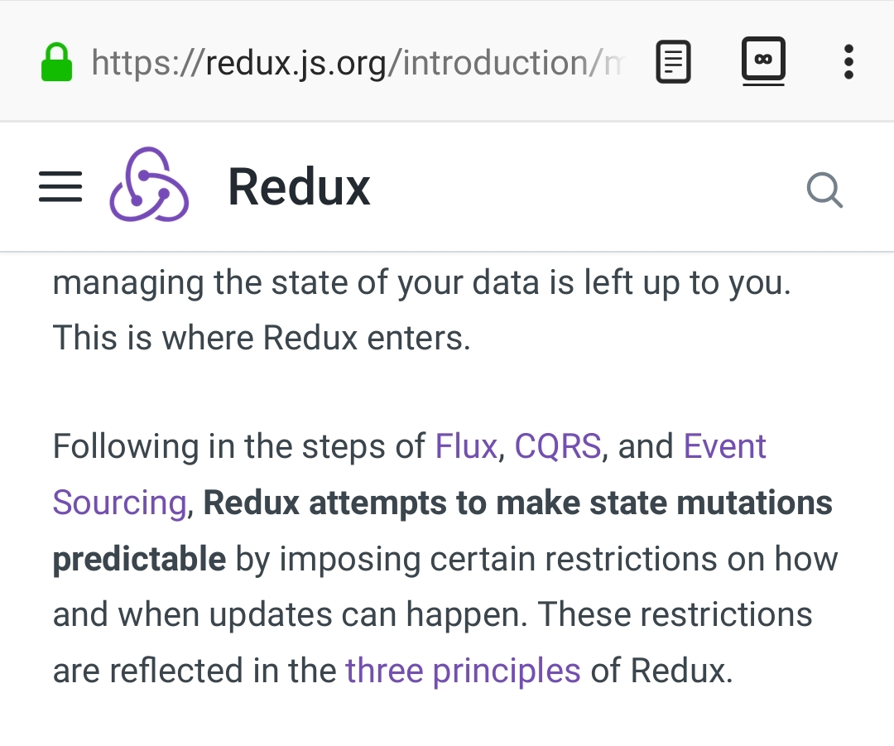

Роль сервисного слоя в CQRS и Event Sourcing на примере использования Redux в Angular¶
Нужно ли скрывать посредством Сервисного Слоя обращения к реализациям CQRS и Event Sourcing? Периодически мне попадаются примеры и неуверенная аргументация о том, что лучше - скрывать. Однако, когда вопрос мог коснуться меня лично, я решил во всем разобраться сам.
Содержание
Что такое CQRS - лучше всего узнать от самого Greg Young.
Использование Redux в Angular приложениях¶
Одним из популярных примеров реализации CQRS является Redux, см. раз, два, три, четыре, пять, шесть.
{kind=link}
“How many have heard of Flux? Does it sound familiar? It’s Event Sourcing. This isn’t new ideas.” - Greg Young, “A Decade of DDD, CQRS, Event Sourcing“
Еще одной из известных реализаций, имеющей меньше путаницы в терминологии, но созданной под влиянием Redux, является dojo/stores.
При использовании этих технологий в Angular, широко использующего концепцию классического Сервисного Слоя, и возникает этот вопрос.
Логика приложения¶
Есть интересная статья “Clarified CQRS” by Udi Dahan, на которую ссылается Martin Fowler в своей статье “CQRS”.
И в этой статье есть интересный момент.
The reason you don’t see this layer explicitly represented in CQRS is that it isn’t really there...
На самом деле, обработчик команды - это и есть Сервис, только событийно-ориентированный, который следует заданному интерфейсу. А значит, он должен содержать логику уровня приложения (а не бизнес-логику).
Our command processing objects in the various autonomous components actually make up our service layer.
Разница между классическим Сервисом и событийно-ориентированным Сервисом в виде обработчика команды примерно такая же, как и между Оркестровым (request/response) и Хореографическим (event-based) способами взаимодействия микросервисов.
Главный недостаток первого - это высокая осведомленность об интерфейсе других Сервисов, т.е. Высокое Сопряжение (High Coupling), что снижает их реиспользование. Правда, потребность в этом реиспользовании, если единственным потребителем сервиса является само же фронтенд-приложение, - остается вопросом дискуссионным.
Таким образом, имея слабо-сопряженные (Low Coupling) событийно-ориентированные Сервисы в виде обработчиков команды, было бы проектной ошибкой попытка связать их в сильно-зацепленные (High Coupling) классические Сервисы Оркестрового типа (с единственной целью - помочь приложению скрыть их от самого же себя).
Each command is independent of the other, so why should we allow the objects which handle them to depend on each other?
Тут, правда, возникает вопрос осведомленности обработчиков команды и самого приложения об интерфейсе конкретной реализации CQRS. Для выравнивания интерфейсов служит паттерн Adapter, которому можно предусмотреть место.
Бизнес-логика¶
Не менее интересным, нежели управление application logic, являются вопросы управления business logic, обращение со связями и агрегатами. Эти вопросы также затрагивает Udi Dahan.
Тут я должен сделать небольшое отступление, и упрощенно сказать о том, чем отличается бизнес-логика от логики приложения, т.к. это для многих не всегда понятно.
Бизнес-логика (деловые регламенты, доменные модели) - это моделирование объектов и процессов предметной области (т.е. реального мира). Это то, что программа должна делать (от слова “дело” - именно так переводится слово “business”), и ради чего она создается.
А логика приложения - это то, что обеспечивает и координирует работу бизнес-логики.
Качественная бизнес-логика должна быть не осведомлена о приложении и инфраструктуре, и может быть легко перенесена из одного приложения в другое. Хотя, надо заметить, что существуют еще и application-specific business rules.
Распространенными ошибками являются разрушение целостности Агрегатов (декомпозиция, которая часто встречается в redux-приложениях), отказ от использования связей между Моделями (вопрос дискуссионный, я согласен), и искусственное вырождение поведения Моделей с выносом всей бизнес-логики в обработчики команд, т.е. в Сервисы.
Вопрос некорректного разделения бизнес-логики и логики приложения - очень тонкий, и на практике часто нарушается в силу непонимания этих отличий разработчиками.
Это приводит к появлению проблемы, о которой говорил Eric Evans:
“Если требования архитектурной среды к распределению обязанностей таковы, что элементы, реализующие концептуальные объекты, оказываются физически разделенными, то код больше не выражает модель.
Нельзя разделять до бесконечности, у человеческого ума есть свои пределы, до которых он еще способен соединять разделенное; если среда выходит за эти пределы, разработчики предметной области теряют способность расчленять модель на осмысленные фрагменты.”
“If the framework’s partitioning conventions pull apart the elements implementing the conceptual objects, the code no longer reveals the model.
There is only so much partitioning a mind can stitch back together, and if the framework uses it all up, the domain developers lose their ability to chunk the model into meaningful pieces.” - “Domain-Driven Design: Tackling Complexity in the Heart of Software” by Eric Evans
Когда приложение имеет мало бизнес-логики, или лишено ее полностью, что часто бывает на практике, то данная проблема не возникает.
Но в приложениях с обширной бизнес-логикой это может сильно ухудшить качество бизнес-моделирования, и препятствовать процессу дистилляции моделей по мере переработки бизнес-знаний [3]. Также такой код обретает признаки “Divergent Change” [1] и “Shotgun Surgery” [1], что сильно затруднят исправление ошибок бизнес-моделирования и Итерационное Проектирование (Evolutionary Design). В конечном итоге это приводит к стремительному росту стоимости изменения программы, но это уже отдельная тема.
Одно время я тоже, как и многие другие, думал что такая фрагментация бизнес-логики является недостатком CQRS. К счастью, это проблема не CQRS, а неверного разделения и размещения бизнес-логики и логики приложения. Я признателен Udi Dahan за то, что он внес ясность в этот вопрос.
Должен заметить, что Udi Dahan в своей статье допускает и использование Transaction Script для организации бизнес-логики. В таком случае, выбор между Transaction Script и Domain Model подробно рассмотрен в “Patterns of Enterprise Application Architecture” by M. Fowler and others. Transaction Script может быть уместным при сочетании Redux и GraphQL для минимизации сетевого трафика. При использовании же REST-API, и наличии бизнес-логики, более уместным будет использование Domain Model и DDD.
Для многих проектов Transaction Script вполне подойдет. Но у меня был один проект, где около 80% клиентского кода была бизнес-логика.
Затрагиваемый Udi Dahan вопрос организации связей между Domain Models я уже частично разбирал в своих постах, и в обозримом будущем планирую обобщить все в одной статье. Этот вопрос действительно, является одним из наиболее острых в бизнес-моделировании, но для клиентского кода его актуальность смягчается возможностью использования Aggregate.
Проблематика¶
И тем не менее, недостатки у CQRS есть, и их сформулировал Martin Fowler в статьях “CQRS” и “What do you mean by “Event-Driven”?”. Их нужно учитывать при выборе технологии.
Мне приходилось слышать от своих коллег о проблемах с перерасходом памяти при использовании redux, в связи с использованием интенсивного клонирования неизменяемых объектов.
Я стараюсь избегать использования Redux в Angular приложениях в пользу классического подхода, так как это упрощает приложение и лучше соответствует принципам Agile разработки. Но должен заметить, что использование Redux помогает осознавать Event-Driven принципы, которые могут стать первой ступенькой к пониманию микросервисной архитектуры, т.е. помогает осуществлять задачи образования.
Пример использования¶
Хороший пример использования Redux в Angular приложении приводится в книге “ng-book 2: The Complete Guide to Angular” by Nate Murray, Felipe Coury, Ari Lerner, and Carlos Taborda, который можно посмотреть здесь. Он не использует никаких дополнительных Сервисов Оркестрового типа (приложение вызывает методы хранилища напрямую), использует Агрегаты (Thread -> Message) и связи (Message -> User). К сожалению, я не смог обнаружить в этом примере демонстрацию обращения с бизнес-логикой, вероятно, потому что пример просто не содержит ее.
Другие ссылки по теме¶
- Awesome Domain-Driven Design - a curated list of Domain-Driven Design (DDD), Command Query Responsibility Segregation (CQRS), Event Sourcing, and Event Storming resources
- resolve - build reactive apps with functional JavaScript, CQRS and Event Sourcing
Благодарности¶
Спасибо моему бывшему коллеге и замечательному специалисту с обширным опытом в области фронтент-разработки, Александру Денисенко, за предварительный обзор этой статьи.
P.S.: Изложенное мнение пока еще находится в процессе формирования, и содержимое данного поста может изменяться.
Footnotes
| [1] | (1, 2) “Refactoring: Improving the Design of Existing Code” by Martin Fowler, Kent Beck, John Brant, William Opdyke, Don Roberts |
| [2] | “Patterns of Enterprise Application Architecture” by Martin Fowler, David Rice, Matthew Foemmel, Edward Hieatt, Robert Mee, Randy Stafford |
| [3] | «Domain-Driven Design: Tackling Complexity in the Heart of Software» by Eric Evans |
Updated on Sep 16, 2018